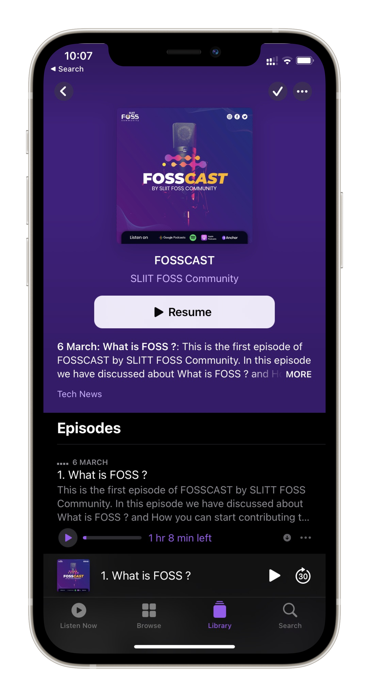
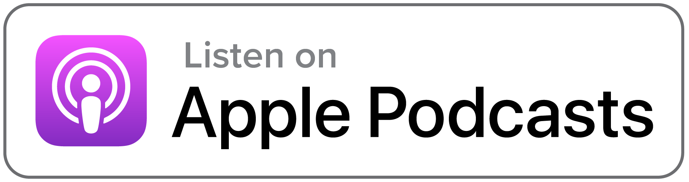

<section class="fdb-block">
  <div class="container-fluid">
    <div class="row align-items-center">
      <div class="col-10 col-sm-6 m-auto col-md-4 pb-4 pb-md-0">
        <span data-tilt>
          
        </span>
      </div>

      <div class="col-12 ml-auto col-md-6 col-lg-6">
        <h1>SLIIT FOSS PODCAST</h1>
        <p class="lead">
          Whether you’re itching to get out of lockdown, searching for your next
          job or struggling to find motivation at your current one - a reminder
          that SLIIT FOSSCAST is launching the first ever podcast episode
          speaking with a VERY influential FOSS enthusiast in Tech!
        </p>
        <p><a class="btn mt-4 mb-5 mb-md-0" href="#">Listening Now</a></p>

        <p class="mt-5">
          
          
          
          
        </p>
      </div>
    </div>
  </div>
</section>
